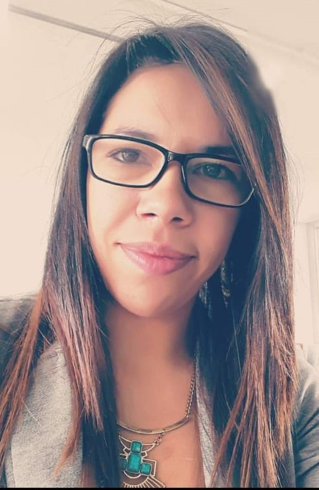

NATALY CASTRO
PERFIL PROFESIONAL
Psicofisiologa forense, con seis semestres de Psicología, experiencia en la coordinación de áreas de consultoría e
investigación, realización de poliagrafías, estudios de seguridad recolección y analisis de
información, identificación de riesgos, verificación de antecedentes en diferentes bases de
datos, visita domiciliarias, entrega de informes, manejo de cliente externo e interno.
Soy una persona con actitud positiva, me comprometo a resolver a cabalidad las
necesidades de los clientes.
Genero compromiso y lealtad a la empresa, trabajo en equipo en pro del cumplimiento de
los objetivos, cumplo con puntualidad y responsabilidad las distintas actividades que realizo
y siempre me convierto en un capital humano importante para la empresa.
EDUCACION
Bachiller Técnico Modalidad Ciencias
Colegio Guillermo Cano Isaza
Tecnico en Investigación Criminal y Judicial
Escuela de Programas técnicos CEDEP
Fisiopsiíologa Forense
Asociacion Europea de Poligrafia
EXPERIENCIA LABORAL
AMERICAN COMPANY COL SAS
Coordinadora Ejecutiva: Octubre 2018 a la fecha
Coordinación de procesos relacionado con la entrega
de estudios de seguridad, poligrafías, comunicación
directa con clientes.
HABILIDADES
Trabajo en equipo, fácil aprendizaje, comunicación asertiva, liderazgo, capacidades con el manejo de sistemas operativos.
HOBBIES
Mis actividades favoritas son ver series, lecturas, salir a caminar y conocer nuevos lugares del pais
¿Porque desarrollo web?
Porque es un tema de mi interes, quiero explorar todo lo relacionado con la programación y el desarrollo web, para adquirir nuevos conocimientos que me permitan ampliar mi campo laboral.
Las expectativas frente a la carrera es culminarla de manera óptima, aprender mucho, para tener un campo laboral que me permita desarrollar las habilidades adquiridas, mejorando asi mi profesion y mis ingresos.